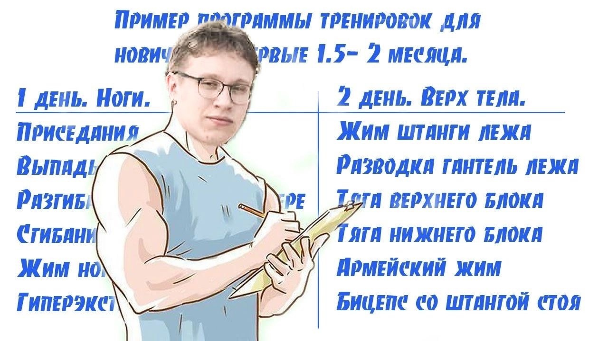

Программа тренировок

1 день Обычный жим (50х10, 55х10, 60х10, 65х8-10 (жмем с остановкой)) Угловой жим (40х10, 45х10, 50х10, 55х8-10 (жмем с остановкой)) Подтягивания в гравитроне параллельным хватом (5х10, 4х10, 4х10, 4х10) Жим гантелями (18х10, 18х10, 20х10, 20х10 (если прет, делаем 22кг на крайний подход) Жим EZ-гриф (27х10, 27х10, 32х10, 32х10) Сводка рук на тренажере (два подхода с 4 плитками, два подхода с 4 плитками + утежилитель (плитка которая сверху плиток укладывается)(все по 10 повторений)) Молоточки (12х10, 12х10, 14х10, 14х10) + Пресс в тренажере (10х25 (4 подхода)) Молитва (6 или 7 плиток (по уровню усталости) на 15 повторений (4 подхода))
2 день Подтягивания на гравитроне широким хватом (5 плиток, 4 плиток, 4 плиток, 4 плиток (все на 10 повторений)) Гиперэкстензия (10х10 (4 подхода, делаем медленно)) Плечи на скамье (16х10, 18х10, 18х10, 20х10) Вертикальная тяга (обычным хватом - 85х10, 100х10, 100х10, 115 делаем сколько можем, потом добиваем с 85. обратным хватом - 75х10, 85х10, 85х10, 100 делаем сколько можем, потом добиваем с 75) Тяга штанги к подбородку (23х10, 23х10, 23х12, 23х12) Горизонтальная тяга (70х10, 85х10, 85х10, 100 ебашим сколько можем, потом добиваем с 75) Махи гантелями вперед и в стороны (6кг 15 повторений в стороны и 15 вперед поочередно. и так 4 подхода) Тяга грифа в наклоне (32х10, 32х10, 32х12, 32х12) Махи гантелями в наклоне (6х10 4 подхода) Рычажная тяга (35х10, 35х10, 40х10, 40х10) + Пресс в тренажере (10х25 (4 подхода))
3 день Подтягивания на гравитроне широким хватом (5 плиток, 4 плиток, 4 плиток, 4 плиток (все на 10 повторений)) Присед (40х10, 50х10, 50х10, 50х10) Трицепс в блоке (7х10, 7х10, 8х10, 8х10) Икры сидя (15х10, 15х10, 20х10, 20х10 (делаем глубоко, в полную амплитуду) Тренажер на задний бицепс бедра (10х10, 15х10, 20х10, 20х10) (на каждую ногу) Французский жим гантелями (7х10, 8х10, 8х10, 8х10) Разгибание ног (130х10, 145х10, 160х10, 160х10) + Сгибание ног (не знаю сколько плиток, делаем на ржавой 10 повторений, 4 подхода) Брусья в гравитроне (4х10, 4х10, 3х10, 3х10) Выпады (10 раз на каждую ногу, 4 подхода) Французский жим на тренажере (5-6 плиток на 10 повторений х 4 подхода) Икры на плитке (80х14, 80х14, 80х16, 80 в отказ (орем, но делаем)) + Пресс в тренажере (10х25 (4 подхода)) Молитва (6 или 7 плиток (по уровню усталости) на 15 повторений (4 подхода))